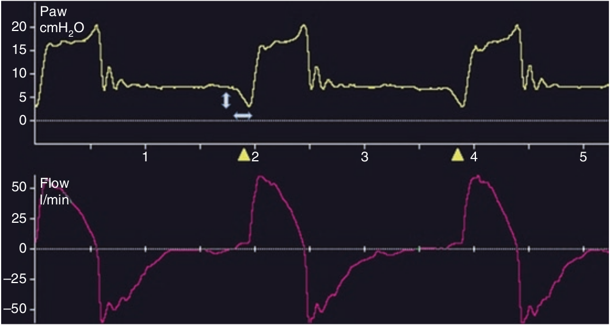

تلاش بیمار برای ترایگر، توسط میزان افت فشار کمتر از خط پایه و مدت زمانی که فشار در پائین خط پایه قرار دارد مشخص میشود. در صورتی که بیمار میل تنفسی بیش از حدی داشته باشد، میزان افت فشار ممکن از است از آستانه لازم برای ترایگر نیز بیشتر باشد.

یک افت شدید در منحنی فشار در فاز ترایگر نشان دهنده کدام مورد زیر نمی باشد؟
۱ - تنظیم حساسیت ترایگر کافی نیست
۲ - نیاز به افزایش حمایت فشاری
۳ - آسینکرونی بیمار - ونتیلاتور
۴ - لزوم استفاده از سیستم ترایگر شدت جریانی
۵ - میل تنفسی بسیار زیاد